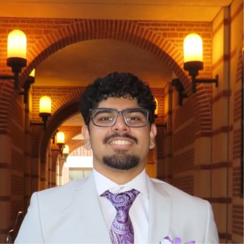

MIS & AI EthicsWebsite OverviewPrayag PurohitOctober 29, 2026About Us Prayag PurohitThis project taught me that MIS is about using technology and data to help people make better decisions. I learned how to build a web page with HTML tags such as tables, lists, links, and images. I also learned that AI can be a helpful tutor, but I must use it honestly and cite it every time. Researching malware like WannaCry showed me how one unpatched computer can put a whole organization at risk. I now understand that security habits such as updates, backups, and multi-factor authentication matter for everyone. Most importantly, I learned that ethics and technology go together, and that Aggies do not lie, cheat, or steal. Email: prayagpurohit115@tamu.edu |